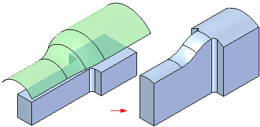
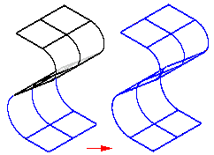

Using surfaces
The surfacing commands help you create complex parts and surface topology more easily. You can use surfaces in the following ways:
-
To define the projection extents when extruding a feature.
-
To replace existing part faces.
-
To divide a part into multiple parts.
-
To create a new surface or solid by stitching together separate surfaces.
-
To repair a model you imported from a third-party CAD system.
Construction surfaces are commonly used as projection extents when extruding a feature. For example, you can create a construction surface, and then use the surface as input during the Extent step when constructing a protrusion.

You can use the Offset Surfaces command to offset a new surface. The options on the command bar allow you to specify whether you want to offset a single face, a chain of faces, or all the faces that make up a feature.

You can use the Stitched Surface command to stitch together Solid Edge surfaces, as well as surfaces created with another CAD system and then imported into Solid Edge.

You can also create surfaces using the Part Copy command. If the Copy As Construction option is set in the Part Copy Parameters dialog box, the part copy is created as a construction surface.